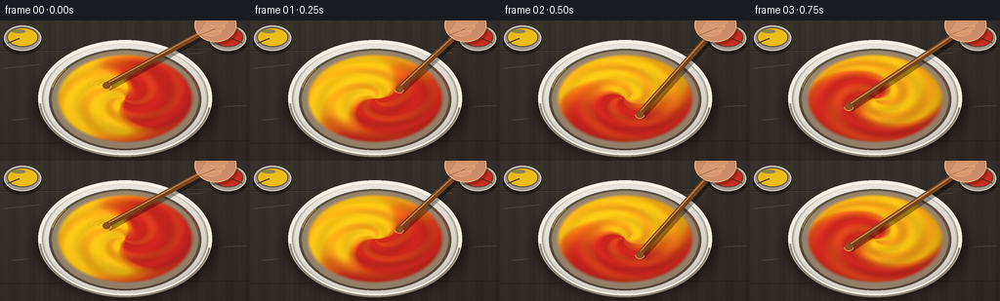
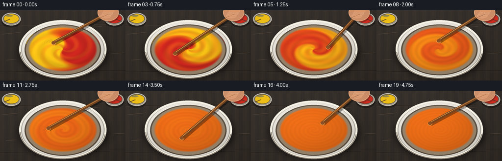

CODING AGENTS AS PIXEL WORLD MODELS
traex/GPT-5.6-Sol · phygen_122
点击播放 · 原生 RGB 像素
逐轮保存的候选
回放视频、检查图与代码变化。
每份候选均可单独播放。实际图片检查记录在下方工具轨迹中。
候选 01播放与检查图
点击播放 · 原生 RGB 像素


展开代码变化
--- 上一保存版本
+++ 本次保存版本
@@ -0,0 +1,210 @@
+from pathlib import Path
+import math
+import numpy as np
+from PIL import Image, ImageDraw, ImageFilter
+import artifact_io
+
+# Deterministic, fully procedural overhead studio scene.
+W, H, N = 256, 144, 20
+S = 3
+w, h = W*S, H*S
+rng = np.random.default_rng(122)
+
+Y, X = np.mgrid[0:h, 0:w]
+xf, yf = X/S, Y/S
+cx, cy = 128.0, 80.0
+
+# Static fine texture fields, later subtly advected by the paint formula.
+fine_noise = rng.normal(0, 1, (h, w))
+# Smooth noise without scipy.
+noise_img = Image.fromarray(np.uint8(np.clip(fine_noise*31+128, 0, 255))).filter(ImageFilter.GaussianBlur(2.2*S))
+smooth_noise = (np.asarray(noise_img).astype(np.float32)-128)/31
+
+def rgba_layer():
+ return Image.new('RGBA', (w, h), (0,0,0,0))
+
+def scbox(box):
+ return tuple(int(round(v*S)) for v in box)
+
+def line(draw, points, fill, width=1, joint='curve'):
+ draw.line([(int(x*S), int(y*S)) for x,y in points], fill=fill, width=max(1,int(width*S)), joint=joint)
+
+def ellipse(draw, box, fill, outline=None, width=1):
+ draw.ellipse(scbox(box), fill=fill, outline=outline, width=max(1,int(width*S)))
+
+def make_background(frame):
+ # Warm, charcoal-stained artist's worktop with diagonal light and wood grain.
+ light = 7.0*(1-yf/H) + 4.0*(1-xf/W)
+ base = np.zeros((h,w,3), dtype=np.float32)
+ base[:] = [45, 39, 34]
+ base += light[...,None]
+ grain = 2.5*np.sin(xf*.34 + 0.22*np.sin(yf*.15)) + 1.2*np.sin(xf*1.21)
+ base += grain[...,None]*np.array([1.0,.72,.45])
+ # Stable very subtle sensor/wood texture.
+ base += fine_noise[...,None]*np.array([1.0,.8,.55])
+ im = Image.fromarray(np.uint8(np.clip(base,0,255)), 'RGB').convert('RGBA')
+ d = ImageDraw.Draw(im, 'RGBA')
+ # Worktop seams and scratches, deliberately restrained.
+ line(d, [(0,31),(256,27)], (23,19,16,105), .7)
+ line(d, [(0,32),(256,28)], (92,75,60,35), .5)
+ line(d, [(0,126),(256,123)], (24,20,17,110), .8)
+ for pts in [[(4,49),(41,45)],[(216,89),(253,87)],[(12,102),(38,100)],[(184,35),(207,33)]]:
+ line(d, pts, (118,98,77,30), .6)
+ return im
+
+def draw_paint_caps(im):
+ # Matching small paint pots at either side: same diameter reinforces equal amounts.
+ layer = rgba_layer(); d=ImageDraw.Draw(layer,'RGBA')
+ # shadows
+ ellipse(d, (3,11,42,35), (0,0,0,85))
+ ellipse(d, (214,11,253,35), (0,0,0,85))
+ # metal pot bodies/rims
+ ellipse(d, (4,5,42,31), (160,153,141,255), (228,220,204,240), 1.2)
+ ellipse(d, (214,5,252,31), (160,153,141,255), (228,220,204,240), 1.2)
+ ellipse(d, (7,7,39,27), (238,190,22,255), (83,75,58,255), 1)
+ ellipse(d, (217,7,249,27), (207,43,31,255), (83,67,58,255), 1)
+ # glossy paint surfaces
+ ellipse(d, (12,9,26,13), (255,236,112,120))
+ ellipse(d, (222,9,236,13), (255,153,132,100))
+ # little equal-size wooden stir marks in each pot
+ line(d, [(8,23),(20,18)], (91,64,38,180), 1.5)
+ line(d, [(248,23),(236,18)], (91,64,38,180), 1.5)
+ im.alpha_composite(layer)
+
+def fluid_array(fi):
+ t = fi/(N-1)
+ # Smooth but prompt-paced blending: clear split initially, vivid marbling midway,
+ # near-perfect orange by the closing second.
+ q = np.clip((t-.01)/.94, 0, 1)
+ q = q*q*(3-2*q)
+ u=(xf-cx)/71.0; v=(yf-cy)/46.0
+ r=np.sqrt(u*u+v*v)
+ theta=np.arctan2(v,u)
+ # Differential rotation winds the initial equal half-and-half division into spirals.
+ turns = 4.15*t
+ phase = theta - 2*np.pi*turns*(1.08 - .74*np.clip(r,0,1))
+ phase += .32*np.sin(2*theta + 7*r - 12*t)*(1-q)
+ sharp = 5.6 - 3.8*q
+ contrast = (1-q)**1.32
+ redfrac = .5 + .5*contrast*np.tanh(sharp*np.cos(phase))
+ # Fine secondary folds make the thick-paint marbling organic rather than graphic.
+ redfrac += .10*contrast*(1-q)*np.sin(4*theta + 15*r - 22*t)*np.exp(-.9*r*r)
+ redfrac=np.clip(redfrac,0,1)
+ yellow=np.array([248,194,22.],dtype=np.float32)
+ red=np.array([207,39,31.],dtype=np.float32)
+ col=yellow[None,None,:]*(1-redfrac[...,None])+red[None,None,:]*redfrac[...,None]
+ # Pigment mixing bends the linear blend toward saturated artist's orange.
+ orange=np.array([238,101,20.],dtype=np.float32)
+ intimate=(4*redfrac*(1-redfrac))[...,None]
+ col=col*(1-.58*intimate)+orange[None,None,:]*(.58*intimate)
+ # Wet, glossy paint shading: top-left light + spiral ridges + subtle texture.
+ illum = 1.0 + .08*(-.55*u-.75*v) - .06*r*r
+ ridge = .045*np.sin(phase*2.0 + r*18 - fi*.8)*(1-.72*q)
+ tex = .018*smooth_noise*np.exp(-.5*r*r)
+ col *= (illum + ridge + tex)[...,None]
+ # Soft elliptical paint mask.
+ edge=np.clip((1.0-r)*S*5.0,0,1)
+ return np.uint8(np.clip(col,0,255)), edge, (u,v,r,theta,phase,q)
+
+def composite_array(im, rgb, alpha):
+ a=np.uint8(np.clip(alpha*255,0,255))
+ layer=Image.fromarray(np.dstack([rgb,a]),'RGBA')
+ im.alpha_composite(layer)
+
+def draw_bowl_and_paint(im, fi):
+ # Broad soft bowl shadow.
+ shadow=rgba_layer(); ds=ImageDraw.Draw(shadow,'RGBA')
+ ellipse(ds,(36,32,222,141),(0,0,0,128))
+ shadow=shadow.filter(ImageFilter.GaussianBlur(6*S))
+ im.alpha_composite(shadow)
+
+ # Ivory ceramic outer body, gently modeled.
+ ro=np.sqrt(((xf-cx)/89)**2+((yf-cy)/60)**2)
+ outer=np.clip((1-ro)*S*4.5,0,1)
+ ceramic=np.empty((h,w,3),np.float32)
+ light=218 + 18*(-.35*(xf-cx)/89-.7*(yf-cy)/60) - 20*np.clip(ro-.78,0,1)
+ ceramic[...,0]=light+7; ceramic[...,1]=light+3; ceramic[...,2]=light-6
+ composite_array(im,np.uint8(np.clip(ceramic,0,255)),outer)
+
+ # Inner bowl shadow/well, then wet pigment.
+ well=rgba_layer(); dw=ImageDraw.Draw(well,'RGBA')
+ ellipse(dw,(50,29,206,133),(80,69,55,235))
+ ellipse(dw,(53,31,203,131),(116,91,62,180))
+ im.alpha_composite(well)
+ rgb, alpha, fields=fluid_array(fi)
+ composite_array(im,rgb,alpha)
+
+ # Ceramic rim lies over the fluid edge: bright upper-left lip and darker lower lip.
+ rim=rgba_layer(); dr=ImageDraw.Draw(rim,'RGBA')
+ dr.ellipse(scbox((39,20,217,140)), outline=(242,238,224,255), width=4*S)
+ dr.arc(scbox((40,21,216,138)), 188, 345, fill=(255,253,242,235), width=2*S)
+ dr.arc(scbox((40,22,216,140)), 8, 176, fill=(166,155,137,190), width=2*S)
+ dr.arc(scbox((51,30,205,133)), 5, 178, fill=(80,65,49,155), width=2*S)
+ # Tiny realistic pigment smears on the rim, still symmetric/equal in opening shots.
+ fade=max(0,1-fi/8)
+ if fade>0:
+ dr.arc(scbox((51,29,205,132)),193,218,fill=(250,188,18,int(200*fade)),width=1*S)
+ dr.arc(scbox((51,29,205,132)),322,347,fill=(204,38,29,int(200*fade)),width=1*S)
+ im.alpha_composite(rim)
+ return fields
+
+def draw_motion_and_stick(im, fi):
+ t=fi/(N-1)
+ ang=-math.pi*.72 + 2*math.pi*5.0*t
+ sx=cx+30*math.cos(ang); sy=cy+18*math.sin(ang)
+ # Curved wake and rapidly moving tip trails, clipped visually inside paint area.
+ wake=rgba_layer(); d=ImageDraw.Draw(wake,'RGBA')
+ for k in range(3):
+ pts=[]
+ for j in range(19):
+ aa=ang-(.12+k*.14)*j/18
+ rr=30-k*3+j*.05
+ pts.append((cx+rr*math.cos(aa),cy+(.60*rr)*math.sin(aa)))
+ line(d,pts,(255,202,89,90-22*k),1.15-.15*k)
+ # Local curved ridges around immersed stick.
+ for rad,alp in [(8,120),(13,74),(18,42)]:
+ pts=[]
+ for j in range(20):
+ aa=ang-1.1+j*1.55/19
+ pts.append((sx+rad*math.cos(aa),sy+rad*.48*math.sin(aa)))
+ line(d,pts,(255,187,87,alp),.75)
+ wake=wake.filter(ImageFilter.GaussianBlur(.28*S))
+ im.alpha_composite(wake)
+
+ # Handle points to a moving wrist in the upper-right; a cast shadow grounds it.
+ hx=221+2.5*math.sin(ang*.45); hy=5+2*math.cos(ang*.38)
+ stick=rgba_layer(); d=ImageDraw.Draw(stick,'RGBA')
+ line(d,[(sx+2,sy+3),(hx+2,hy+3)],(0,0,0,90),7)
+ line(d,[(sx,sy),(hx,hy)],(116,68,31,255),6)
+ line(d,[(sx-.5,sy-1),(hx-.5,hy-1)],(215,145,73,220),1.5)
+ # Rounded submerged stirring end, dark paint contact on its lower side.
+ ellipse(d,(sx-4,sy-3,sx+4,sy+4),(139,80,37,255))
+ d.arc(scbox((sx-5,sy-4,sx+5,sy+5)),10,175,fill=(246,171,83,210),width=1*S)
+ im.alpha_composite(stick)
+
+ # Cropped hand gripping the stick, adding unequivocal vigorous human stirring.
+ hand=rgba_layer(); d=ImageDraw.Draw(hand,'RGBA')
+ ellipse(d,(201,-11,244,25),(52,31,21,85)) # shadow
+ ellipse(d,(199,-13,242,22),(205,143,104,255),(239,181,137,255),1)
+ # Fingers wrap around handle.
+ for j,(x0,y0,x1,y1) in enumerate([(205,7,226,16),(208,2,230,11),(211,-3,233,6)]):
+ ellipse(d,(x0,y0,x1,y1),(218,153,111,255),(244,186,143,220),.7)
+ line(d,[(204,15),(223,7)],(150,91,64,130),.7)
+ im.alpha_composite(hand)
+
+
+def render(fi):
+ im=make_background(fi)
+ draw_paint_caps(im)
+ draw_bowl_and_paint(im,fi)
+ draw_motion_and_stick(im,fi)
+ # Gentle vignette focuses attention on the mixing action.
+ rr=((xf-W/2)/(W*.69))**2+((yf-H/2)/(H*.84))**2
+ vig=np.clip((rr-.42)*22,0,38).astype(np.uint8)
+ veil=np.zeros((h,w,4),np.uint8); veil[...,3]=vig
+ im.alpha_composite(Image.fromarray(veil,'RGBA'))
+ return np.asarray(im.convert('RGB').resize((W,H),Image.Resampling.LANCZOS),dtype=np.uint8)
+
+frames=np.stack([render(i) for i in range(N)])
+artifact_io.save(frames,Path(__file__).resolve().parent)
+print('saved',frames.shape,frames.dtype)
可观测工具轨迹
实际执行的命令与返回图片。
命令 1exit 0
/bin/bash -lc "cat prompt.txt && printf '\\n---RULES---\\n' && cat GENERATION_RULES.md && printf '\\n---SPEC---\\n' && cat task_spec.json"
命令 2exit 0
/bin/bash -lc "find . -maxdepth 2 -type f -printf '%p %s bytes\\n' | sort"
命令 3exit 0
/bin/bash -lc "sed -n '1,240p' artifact_io.py"
命令 4exit 0
/bin/bash -lc "cat > generate.py <<'PY'
from pathlib import Path
import math
import numpy as np
from PIL import Image, ImageDraw, ImageFilter
import artifact_io
# Deterministic, fully procedural overhead studio scene.
W, H, N = 256, 144, 20
S = 3
w, h = W*S, H*S
rng = np.random.default_rng(122)
Y, X = np.mgrid[0:h, 0:w]
xf, yf = X/S, Y/S
cx, cy = 128.0, 80.0
# Static fine texture fields, later subtly advected by the paint formula.
fine_noise = rng.normal(0, 1, (h, w))
# Smooth noise without scipy.
noise_img = Image.fromarray(np.uint8(np.clip(fine_noise*31+128, 0, 255))).filter(ImageFilter.GaussianBlur(2.2*S))
smooth_noise = (np.asarray(noise_img).astype(np.float32)-128)/31
def rgba_layer():
return Image.new('RGBA', (w, h), (0,0,0,0))
def scbox(box):
return tuple(int(round(v*S)) for v in box)
def line(draw, points, fill, width=1, joint='curve'):
draw.line([(int(x*S), int(y*S)) for x,y in points], fill=fill, width=max(1,int(width*S)), joint=joint)
def ellipse(draw, box, fill, outline=None, width=1):
draw.ellipse(scbox(box), fill=fill, outline=outline, width=max(1,int(width*S)))
def make_background(frame):
# Warm, charcoal-stained artist's worktop with diagonal light and wood grain.
light = 7.0*(1-yf/H) + 4.0*(1-xf/W)
base = np.zeros((h,w,3), dtype=np.float32)
base[:] = [45, 39, 34]
base += light[...,None]
grain = 2.5*np.sin(xf*.34 + 0.22*np.sin(yf*.15)) + 1.2*np.sin(xf*1.21)
base += grain[...,None]*np.array([1.0,.72,.45])
# Stable very subtle sensor/wood texture.
base += fine_noise[...,None]*np.array([1.0,.8,.55])
im = Image.fromarray(np.uint8(np.clip(base,0,255)), 'RGB').convert('RGBA')
d = ImageDraw.Draw(im, 'RGBA')
# Worktop seams and scratches, deliberately restrained.
line(d, [(0,31),(256,27)], (23,19,16,105), .7)
line(d, [(0,32),(256,28)], (92,75,60,35), .5)
line(d, [(0,126),(256,123)], (24,20,17,110), .8)
for pts in [[(4,49),(41,45)],[(216,89),(253,87)],[(12,102),(38,100)],[(184,35),(207,33)]]:
line(d, pts, (118,98,77,30), .6)
return im
def draw_paint_caps(im):
# Matching small paint pots at either side: same diameter reinforces equal amounts.
layer = rgba_layer(); d=ImageDraw.Draw(layer,'RGBA')
# shadows
ellipse(d, (3,11,42,35), (0,0,0,85))
ellipse(d, (214,11,253,35), (0,0,0,85))
# metal pot bodies/rims
ellipse(d, (4,5,42,31), (160,153,141,255), (228,220,204,240), 1.2)
ellipse(d, (214,5,252,31), (160,153,141,255), (228,220,204,240), 1.2)
ellipse(d, (7,7,39,27), (238,190,22,255), (83,75,58,255), 1)
ellipse(d, (217,7,249,27), (207,43,31,255), (83,67,58,255), 1)
# glossy paint surfaces
ellipse(d, (12,9,26,13), (255,236,112,120))
ellipse(d, (222,9,236,13), (255,153,132,100))
# little equal-size wooden stir marks in each pot
line(d, [(8,23),(20,18)], (91,64,38,180), 1.5)
line(d, [(248,23),(236,18)], (91,64,38,180), 1.5)
im.alpha_composite(layer)
def fluid_array(fi):
t = fi/(N-1)
# Smooth but prompt-paced blending: clear split initially, vivid marbling midway,
# near-perfect orange by the closing second.
q = np.clip((t-.01)/.94, 0, 1)
q = q*q*(3-2*q)
u=(xf-cx)/71.0; v=(yf-cy)/46.0
r=np.sqrt(u*u+v*v)
theta=np.arctan2(v,u)
# Differential rotation winds the initial equal half-and-half division into spirals.
turns = 4.15*t
phase = theta - 2*np.pi*turns*(1.08 - .74*np.clip(r,0,1))
phase += .32*np.sin(2*theta + 7*r - 12*t)*(1-q)
sharp = 5.6 - 3.8*q
contrast = (1-q)**1.32
redfrac = .5 + .5*contrast*np.tanh(sharp*np.cos(phase))
# Fine secondary folds make the thick-paint marbling organic rather than graphic.
redfrac += .10*contrast*(1-q)*np.sin(4*theta + 15*r - 22*t)*np.exp(-.9*r*r)
redfrac=np.clip(redfrac,0,1)
yellow=np.array([248,194,22.],dtype=np.float32)
red=np.array([207,39,31.],dtype=np.float32)
col=yellow[None,None,:]*(1-redfrac[...,None])+red[None,None,:]*redfrac[...,None]
# Pigment mixing bends the linear blend toward saturated artist's orange.
orange=np.array([238,101,20.],dtype=np.float32)
intimate=(4*redfrac*(1-redfrac))[...,None]
col=col*(1-.58*intimate)+orange[None,None,:]*(.58*intimate)
# Wet, glossy paint shading: top-left light + spiral ridges + subtle texture.
illum = 1.0 + .08*(-.55*u-.75*v) - .06*r*r
ridge = .045*np.sin(phase*2.0 + r*18 - fi*.8)*(1-.72*q)
tex = .018*smooth_noise*np.exp(-.5*r*r)
col *= (illum + ridge + tex)[...,None]
# Soft elliptical paint mask.
edge=np.clip((1.0-r)*S*5.0,0,1)
return np.uint8(np.clip(col,0,255)), edge, (u,v,r,theta,phase,q)
def composite_array(im, rgb, alpha):
a=np.uint8(np.clip(alpha*255,0,255))
layer=Image.fromarray(np.dstack([rgb,a]),'RGBA')
im.alpha_composite(layer)
def draw_bowl_and_paint(im, fi):
# Broad soft bowl shadow.
shadow=rgba_layer(); ds=ImageDraw.Draw(shadow,'RGBA')
ellipse(ds,(36,32,222,141),(0,0,0,128))
shadow=shadow.filter(ImageFilter.GaussianBlur(6*S))
im.alpha_composite(shadow)
# Ivory ceramic outer body, gently modeled.
ro=np.sqrt(((xf-cx)/89)**2+((yf-cy)/60)**2)
outer=np.clip((1-ro)*S*4.5,0,1)
ceramic=np.empty((h,w,3),np.float32)
light=218 + 18*(-.35*(xf-cx)/89-.7*(yf-cy)/60) - 20*np.clip(ro-.78,0,1)
ceramic[...,0]=light+7; ceramic[...,1]=light+3; ceramic[...,2]=light-6
composite_array(im,np.uint8(np.clip(ceramic,0,255)),outer)
# Inner bowl shadow/well, then wet pigment.
well=rgba_layer(); dw=ImageDraw.Draw(well,'RGBA')
ellipse(dw,(50,29,206,133),(80,69,55,235))
ellipse(dw,(53,31,203,131),(116,91,62,180))
im.alpha_composite(well)
rgb, alpha, fields=fluid_array(fi)
composite_array(im,rgb,alpha)
# Ceramic rim lies over the fluid edge: bright upper-left lip and darker lower lip.
rim=rgba_layer(); dr=ImageDraw.Draw(rim,'RGBA')
dr.ellipse(scbox((39,20,217,140)), outline=(242,238,224,255), width=4*S)
dr.arc(scbox((40,21,216,138)), 188, 345, fill=(255,253,242,235), width=2*S)
dr.arc(scbox((40,22,216,140)), 8, 176, fill=(166,155,137,190), width=2*S)
dr.arc(scbox((51,30,205,133)), 5, 178, fill=(80,65,49,155), width=2*S)
# Tiny realistic pigment smears on the rim, still symmetric/equal in opening shots.
fade=max(0,1-fi/8)
if fade>0:
dr.arc(scbox((51,29,205,132)),193,218,fill=(250,188,18,int(200*fade)),width=1*S)
dr.arc(scbox((51,29,205,132)),322,347,fill=(204,38,29,int(200*fade)),width=1*S)
im.alpha_composite(rim)
return fields
def draw_motion_and_stick(im, fi):
t=fi/(N-1)
ang=-math.pi*.72 + 2*math.pi*5.0*t
sx=cx+30*math.cos(ang); sy=cy+18*math.sin(ang)
# Curved wake and rapidly moving tip trails, clipped visually inside paint area.
wake=rgba_layer(); d=ImageDraw.Draw(wake,'RGBA')
for k in range(3):
pts=[]
for j in range(19):
aa=ang-(.12+k*.14)*j/18
rr=30-k*3+j*.05
pts.append((cx+rr*math.cos(aa),cy+(.60*rr)*math.sin(aa)))
line(d,pts,(255,202,89,90-22*k),1.15-.15*k)
# Local curved ridges around immersed stick.
for rad,alp in [(8,120),(13,74),(18,42)]:
pts=[]
for j in range(20):
aa=ang-1.1+j*1.55/19
pts.append((sx+rad*math.cos(aa),sy+rad*.48*math.sin(aa)))
line(d,pts,(255,187,87,alp),.75)
wake=wake.filter(ImageFilter.GaussianBlur(.28*S))
im.alpha_composite(wake)
# Handle points to a moving wrist in the upper-right; a cast shadow grounds it.
hx=221+2.5*math.sin(ang*.45); hy=5+2*math.cos(ang*.38)
stick=rgba_layer(); d=ImageDraw.Draw(stick,'RGBA')
line(d,[(sx+2,sy+3),(hx+2,hy+3)],(0,0,0,90),7)
line(d,[(sx,sy),(hx,hy)],(116,68,31,255),6)
line(d,[(sx-.5,sy-1),(hx-.5,hy-1)],(215,145,73,220),1.5)
# Rounded submerged stirring end, dark paint contact on its lower side.
ellipse(d,(sx-4,sy-3,sx+4,sy+4),(139,80,37,255))
d.arc(scbox((sx-5,sy-4,sx+5,sy+5)),10,175,fill=(246,171,83,210),width=1*S)
im.alpha_composite(stick)
# Cropped hand gripping the stick, adding unequivocal vigorous human stirring.
hand=rgba_layer(); d=ImageDraw.Draw(hand,'RGBA')
ellipse(d,(201,-11,244,25),(52,31,21,85)) # shadow
ellipse(d,(199,-13,242,22),(205,143,104,255),(239,181,137,255),1)
# Fingers wrap around handle.
for j,(x0,y0,x1,y1) in enumerate([(205,7,226,16),(208,2,230,11),(211,-3,233,6)]):
ellipse(d,(x0,y0,x1,y1),(218,153,111,255),(244,186,143,220),.7)
line(d,[(204,15),(223,7)],(150,91,64,130),.7)
im.alpha_composite(hand)
def render(fi):
im=make_background(fi)
draw_paint_caps(im)
draw_bowl_and_paint(im,fi)
draw_motion_and_stick(im,fi)
# Gentle vignette focuses attention on the mixing action.
rr=((xf-W/2)/(W*.69))**2+((yf-H/2)/(H*.84))**2
vig=np.clip((rr-.42)*22,0,38).astype(np.uint8)
veil=np.zeros((h,w,4),np.uint8); veil[...,3]=vig
im.alpha_composite(Image.fromarray(veil,'RGBA'))
return np.asarray(im.convert('RGB').resize((W,H),Image.Resampling.LANCZOS),dtype=np.uint8)
frames=np.stack([render(i) for i in range(N)])
artifact_io.save(frames,Path(__file__).resolve().parent)
print('saved',frames.shape,frames.dtype)
PY
python generate.py"命令 5exit 0
/bin/bash -lc "python - <<'PY'
from pathlib import Path
import numpy as np
from PIL import Image
p=Path('.')
a=np.load('pixels.npz')['pixels']
print('pixels',a.shape,a.dtype)
ims=list(Path('frames').glob('*.png'))
print('frames',len(ims), Image.open(ims[0]).mode, Image.open(ims[0]).size)
for f in ['pixels.npz','index.html','inspection.png','transition_check.png','generate.py']:
print(f,Path(f).stat().st_size)
PY"视觉工具实际返回图片 1

视觉工具实际返回图片 2

保存候选 1 份；完成命令 5 次；可验证图片返回 2 张。原始 API 响应与完整日志保留在本地。